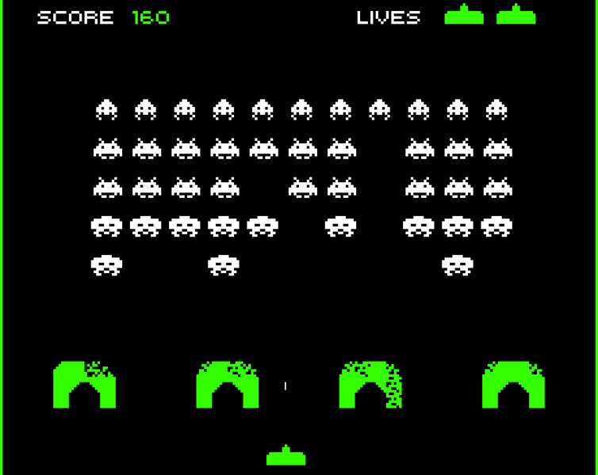

What does it mean to be efficient? What is an example of a time when it is important to be efficient?
For the next few lessons we will look at how efficient we can make our programs. Computers are extremely fast at following instructions, so the trouble only shows up when there are a great many instructions to follow.
If you have ever played a single-player game that started slowing down or dropping frames when a lot was happening on screen, you have seen what it looks like when the computer is asked to execute too many instructions at once.
The original Space Invaders took advantage of this. As you destroyed more ships, the remaining ones sped up.
That speed-up was actually a bug: with fewer ships to draw and move, the computer had less to do, so the game ran faster. Designer Tomohiro Nishikado liked the effect so much that he left it in.

App Lab gives you a Turtle that draws as it moves. You will control it with only a handful of simple commands, and your challenge is to make it draw shapes using as few instructions as possible.
A short Code.org video on the programming environment and building drawings from a few simple commands.
What is the initial set of commands you have to work with in App Lab?
Complete dots 3 through 9. Use Pair Programming for levels 3, 4, and 5, and swap the driver and navigator roles when the timer chimes. Dots 6 through 9 are on your own.
Controls the keyboard and the mouse, and types the code.
Keeps track of the big picture and guides the driver toward the goal.
Swap roles often. When the timer chimes, trade the keyboard so both partners spend time driving and navigating.
In the top right corner, click your name.
Click “Pair Programming.”
Choose your partner’s name.
Alternate driver and navigator roles as you work.
Make sure to Run and click Finish when you complete each level. This gives the navigator a copy of your work too.
Look back at your level 5 (linked in the upper right corner of App Lab). How many instructions did it take you to draw the grid?
Today’s activity challenged you to find the most efficient solution to a problem. We care about efficiency whenever we do not want to waste something valuable, such as money, time, or space.
We measured the efficiency of our programs in lines of code, but that is only one way to think about it. Programs can also be measured by how much time they take to run and how much memory they use.
When we try to create efficient programs, what other valuable resources might we be concerned about conserving?
Learning to program is not just a matter of memorizing commands. The creative part, the art of programming, is always about understanding how to combine the features of a language to solve a problem.
Whether you know 4 commands or 400, you are always constrained by the language. There is no built-in command for every little thing, so you have to understand the set of things a language can do and then use creativity and problem-solving to get the computer to do what you want.
As we saw today, even drawing with a turtle and four commands, the solutions are not always easy. We will keep practicing as the challenges get more complex.